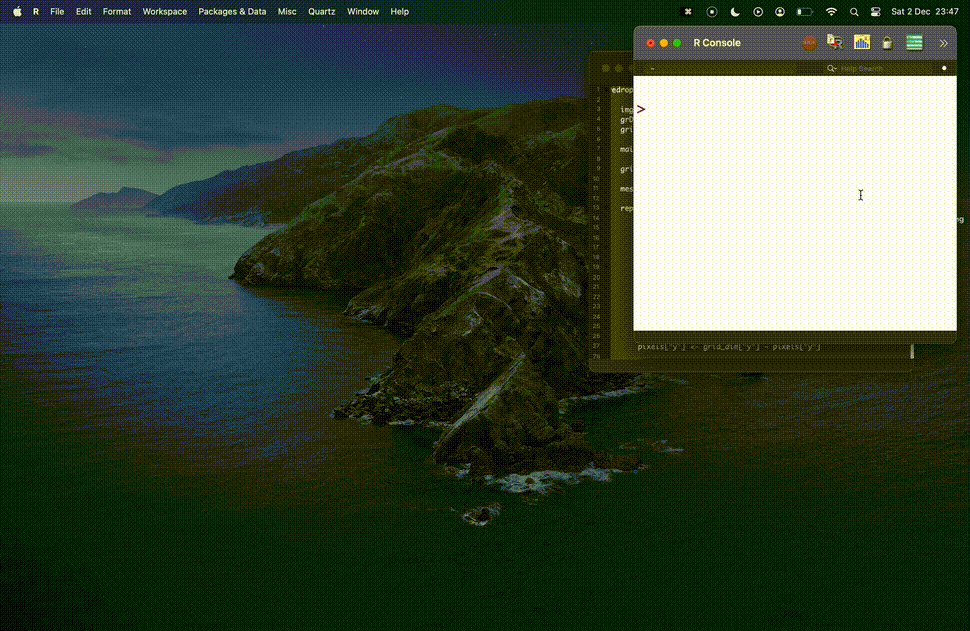

eyedrop <- function(file, swatch = TRUE) {
# Check file exists
if (!file.exists(file)) stop("File doesn't exist.")
# Check file extension
file_ext <- tools::file_ext(file)
if (!file_ext %in% c("png", "jpeg")) stop("File must be .png or .jpeg.")
# Read from path
if (file_ext == "png") img <- png::readPNG(file)
if (file_ext == "jpeg") img <- jpeg::readJPEG(file)
# Plot the image
grDevices::dev.new()
grid::grid.raster(img)
main_dev <- grDevices::dev.cur()
# Get the size of the plot window
grid_size <- setNames(dev.size("cm"), c("x", "y"))
message("Select points on the image to identify colours. Press <Esc> to quit.")
# Keep allowing user to click points until they refuse
repeat {
clicked_point <- grid::grid.locator("cm") # xy in cm
if (is.null(clicked_point)) break # exit if user is finished
# Standardise xy as 0 to 1
grid_coords <- unlist(clicked_point)
grid_ratios <- grid_coords / grid_size
# Find the 'pixel' coords given the image's resolution
grid_dim <- setNames(dim(img)[1:2], c("y", "x"))[2:1]
pixels <- round(grid_dim * grid_ratios)
pixels["y"] <- grid_dim["y"] - pixels["y"]
# Extract RGB for given pixel, convert to hex
rgb_vals <- img[pixels["y"], pixels["x"], ]
hex <- rgb(rgb_vals[1], rgb_vals[2], rgb_vals[3])
# Open a window filled with the provided hex colour
if (swatch) {
dev.new(width = 2, height = 2)
par(mar = c(rep(0, 4))) # remove plot margins
image(matrix(1), col = hex)
grDevices::dev.set(main_dev) # return focus to original plot window
}
message(hex)
}
}
tl;dr
Use the {eyedroppeR} package by Dan Oehm if you want to sample a colour from an image using R. You don’t need to use my hastily-created function.
Top of the drops
A colleague on Slack asked about ‘eyedropper’ tools; where you can click a point on an image and have its colour returned. Very handy.
I couldn’t recall seeing an eyedrop tool built with R. How hard could it be to make one?
I thought immediately of the locator() function from base R, which lets you click a plot and have its coordinates returned1. So I went ahead and made a little demo function.
But I figured someone must have done this before, so I asked on Mastodon. And lol, of course: the {eyedroppeR} package by Dan Oehm already does this. And more.
Eye, eye
So this is a good lesson about avoiding duplication and wasted effort. I’m glad I asked about it!
But I still had fun. For posterity, here’s the sketch I came up with:
Of course, this is a minimum viable product and has many deficiencies; it is not optimised in any way. I may even have misunderstood some concepts from {grid} graphics.
Also, importantly, there is some kind of issue with RStudio where grid units are converted incorrectly. Hence why the example shown at the top of this post uses R’s vanilla graphical use interface. Given that
Of course, I welcome your thoughts on how to improve the function. But yeah, y’know, just use {eyedroppeR}.
To break it down:
- We get the plot window dimensions with
dev.size()and coordinates for our clicked point withgrid.locator(). We can use that to work out how far along each axis that our point is, as a percentage. - We can then check the
dim()ensions of the image (i.e. its resolution) and locate the ‘pixel’ that is x% and y% along each axis. - The image is an array object with red, green and blue ‘channels’, so we can retrieve each one for our pixel and convert to a hex value.
Dry your eyes, mate
I’m a big believer in sharing failure. I’m a big believer in recognising when to stop.
Regardless of ‘success’, I’m also a big believer in sharing your ideas and documenting your thought processes.
Environment
Session info
Last rendered: 2023-12-03 19:09:31 GMTR version 4.3.1 (2023-06-16)
Platform: aarch64-apple-darwin20 (64-bit)
Running under: macOS Ventura 13.2.1
Matrix products: default
BLAS: /Library/Frameworks/R.framework/Versions/4.3-arm64/Resources/lib/libRblas.0.dylib
LAPACK: /Library/Frameworks/R.framework/Versions/4.3-arm64/Resources/lib/libRlapack.dylib; LAPACK version 3.11.0
locale:
[1] en_US.UTF-8/en_US.UTF-8/en_US.UTF-8/C/en_US.UTF-8/en_US.UTF-8
time zone: Europe/London
tzcode source: internal
attached base packages:
[1] stats graphics grDevices utils datasets methods base
loaded via a namespace (and not attached):
[1] htmlwidgets_1.6.2 compiler_4.3.1 fastmap_1.1.1 cli_3.6.1
[5] tools_4.3.1 htmltools_0.5.6.1 rstudioapi_0.15.0 yaml_2.3.7
[9] rmarkdown_2.25 knitr_1.45 jsonlite_1.8.7 xfun_0.41
[13] digest_0.6.33 rlang_1.1.2 evaluate_0.23 Footnotes
I used
locator()for the {pixeltrix} ‘pixel-art editor’ package and in a previous post about getting coordinates from fictitious maps.↩︎
Reuse
CC BY-NC-SA 4.0